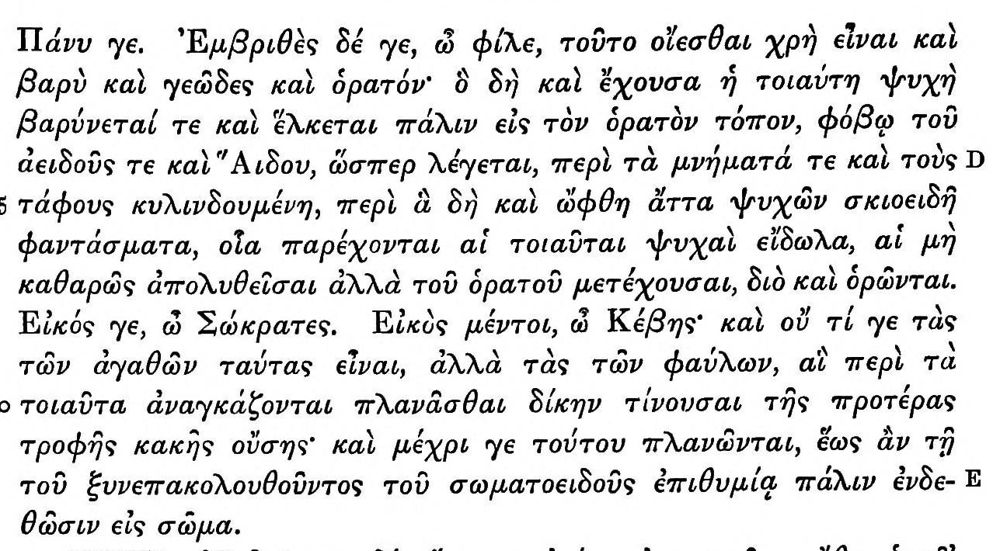

Shadowy phantoms about the tombs (81c–e)
Greek: Phaedo 81c–e, ed. Archer-Hind (1883), p. 96, scan n107. The margin letters D and E are Stephanus sections. Highlighted: the theory Lecky summarises.

“Certainly.” “And this, my friend, we must suppose to be heavy and weighty and earthy and visible; and such a soul, having it, is weighed down and dragged back into the visible region, through fear of the invisible and of Hades, as they say, rolling about the monuments and the tombs, around which, indeed, certain shadowy phantoms of souls have been seen: such images as souls of this kind present, which have not been released in purity but share in the visible; and that is why they are seen.” “That is likely, Socrates.” “Likely indeed, Cebes; and likely that these are not the souls of the good but of the bad, which are compelled to wander about such places, paying the penalty for their former way of life, which was evil; and they wander until, through the desire of the bodily element that follows them about, they are bound again into a body.”
Translation: this edition’s draft.
Original Greek
Πάνυ γε. Ἐμβριθὲς δέ γε, ὦ φίλε, τοῦτο οἴεσθαι χρὴ εἶναι καὶ βαρὺ καὶ γεῶδες καὶ ὁρατόν· ὃ δὴ καὶ ἔχουσα ἡ τοιαύτη ψυχὴ βαρύνεταί τε καὶ ἕλκεται πάλιν εἰς τὸν ὁρατὸν τόπον, φόβῳ τοῦ ἀειδοῦς τε καὶ Ἅιδου, ὥσπερ λέγεται, περὶ τὰ μνήματά τε καὶ τοὺς τάφους κυλινδουμένη, περὶ ἃ δὴ καὶ ὤφθη ἄττα ψυχῶν σκιοειδῆ φαντάσματα, οἷα παρέχονται αἱ τοιαῦται ψυχαὶ εἴδωλα, αἱ μὴ καθαρῶς ἀπολυθεῖσαι ἀλλὰ τοῦ ὁρατοῦ μετέχουσαι, διὸ καὶ ὁρῶνται. Εἰκός γε, ὦ Σώκρατες. Εἰκὸς μέντοι, ὦ Κέβης· καὶ οὔ τί γε τὰς τῶν ἀγαθῶν ταύτας εἶναι, ἀλλὰ τὰς τῶν φαύλων, αἳ περὶ τὰ τοιαῦτα ἀναγκάζονται πλανᾶσθαι δίκην τίνουσαι τῆς προτέρας τροφῆς κακῆς οὔσης· καὶ μέχρι γε τούτου πλανῶνται, ἕως ἂν τῇ τοῦ ξυνεπακολουθοῦντος τοῦ σωματοειδοῦς ἐπιθυμίᾳ πάλιν ἐνδεθῶσιν εἰς σῶμα.
The text goes on at once (81e–82b, read in the OCR only) to say where such souls are bound: gluttons and drunkards into asses, the unjust and tyrannical into wolves, hawks and kites, and the merely respectable into bees, wasps and ants.
Further down the rabbit hole
Sources that Lecky cites in the notes next to the ones that cite this page.
- Cudworth, The True Intellectual System of the Universe, with Mosheim’s notesDid the early Fathers think the soul had a body? Origen, ghosts and Mosheim’s notes
- Hallam, Literature of Europe and Constitutional HistoryHow Lecky quotes Hallam on persecution
- Tertullian, De animaThe soul is a body: the rich man in hell, and a soul seen in a vision
- Augustine, De civitate DeiSeventy reports, not miracles, and a town, not a province
- Agobard, Liber de imaginibusLecky’s five Agobard quotes checked against Baluze
- Aquinas, Summa theologiae, Supplement, q. 94Lecky’s quotation that is really a paraphrase


Backlinks
Every place in Rationalism in Europe that links to this page (generated automatically when the site is built).
- Chapter III: note 163